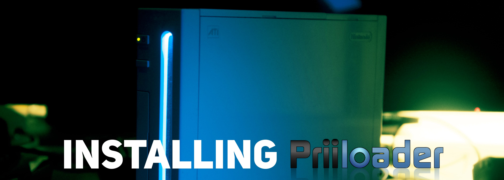
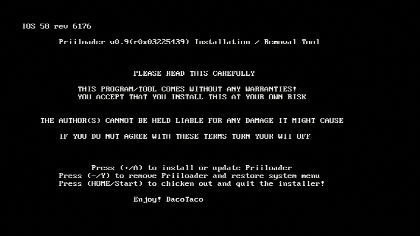
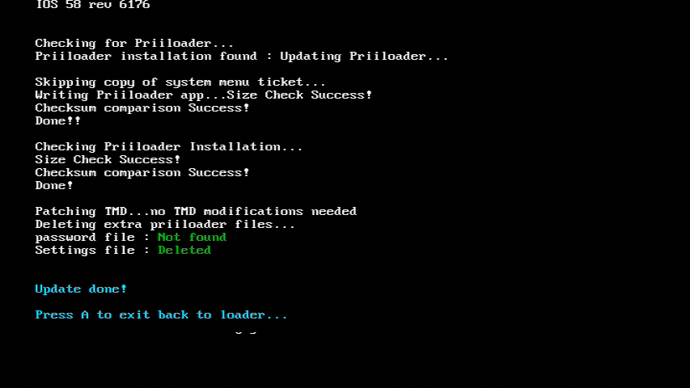
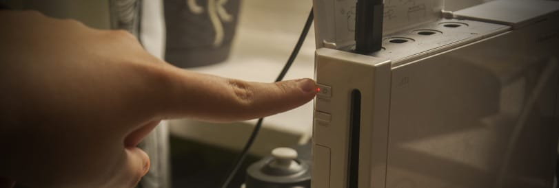
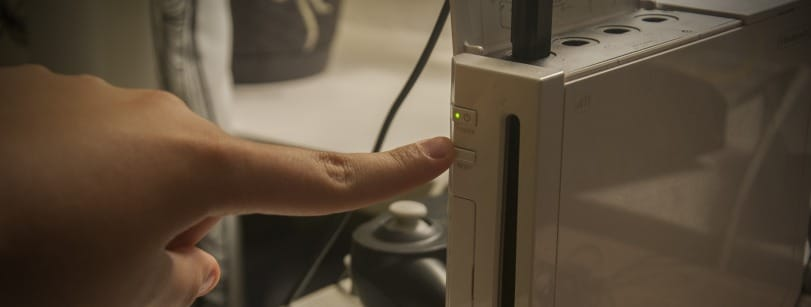
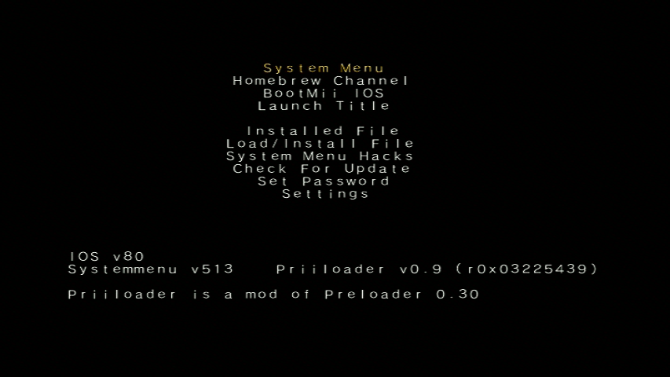
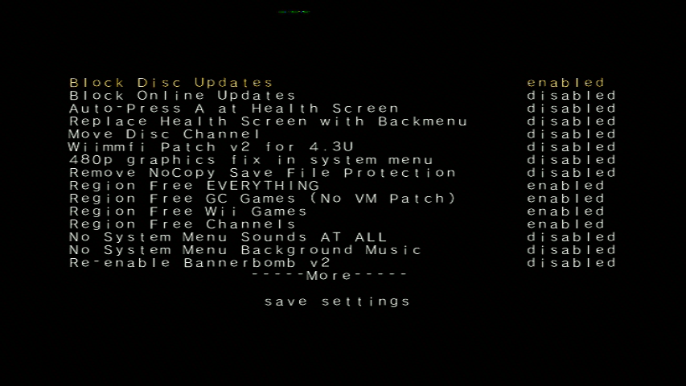

Priiloader
Dacă ai nevoie de ajutor pentru orice legat de acest tutorial, te rugăm să te alături serverului de discord RiiConnect24 (recomandat) sau scrie-ne un email la [email protected].
Priiloader adaugă un nivel de protecție anti-brick consolei tale Wii. El rulează înainte de Meniul Wii (de aici vine numele). Această unealtă poate de asemenea să activeze hack-uri pentru Meniul tău Wii, și poate fi utilizat să ruleze Homebrew Channel, BootMii, sau orice homebrew vrei rapid!

Nu instala Priiloader pe un vWii (modul Wii pe Wii U). O să cauzezi un brick vWii-ului făcând asta.
De ce ai nevoie
- Un card SD sau o unitate USB
- instalatorul Priiloader
Instrucțiuni
Secțiunea I - Descărcare/Instalare
- Descarcă instalatorul Priiloader și extrage-l în rădăcina cardului tău SD sau unității tale USB.
Secțiunea II - Instalarea Priiloader
- Pornește Homebrew Channel pe Wii.
- Lansează instalatorul Priiloader.
- Apasă Butonul + pe un Wii Remote sau Butonul A pe un controller Gamecube. 
Secțiunea III - Deschiderea/Configurarea Priiloader
- Ține apăsat butonul RESET în timp ce îți pornești Wii-ul.
- Dacă folosești un Wii mini, conectează o tastatură USB și ține apăsat Escape pe el în timp ce îl pornești.
 
- Ar trebui să vezi meniul Priiloader. 
- Du-te la
System Menu Hacks.
Dacă folosești o unitate USB pentru a instala Priiloader, asigură-te că nu ai un card SD introdus în același timp. Asta va cauza Priiloader să nu găsească fișierul hacks_hash.ini.
- Recomandăm sa pornești următoarele hack-uri:
Region Free EVERYTHING,Block Disc UpdatesșiBlock Online Updates.  - Derulează în jos la
save settingsși apasă A, apoi apasă B pentru a te întoarce în meniul principal Priiloader. - Derulează la
Homebrew Channelși apasă A pentru a-l rula.
Lista de Hack-uri pentru System Menu
Asta este o lista cu hack-urile care le poți activa cu Priiloader.
| Hack | Descriere |
|---|---|
| Block Disc Updates | Dezactivează ecranul “Wii System Update” inclus cu unele jocuri care te forțează să actualizezi sistemul înainte de a juca jocul. |
| Block Online Updates | Dezactivează posibilitatea de a actualiza consola. Actualizările vor eșua cu eroarea 32007. |
| Auto-Press A at Health Screen | Apasă A automat pentru a trece de ecranul inițial “Health and Safety”. |
| Replace Health Screen with Backmenu | Schimbă ecranul “Health and Safety” cu animația redată când te întorci în Wii Menu. |
| Move Disc Channel | Activează mutarea Disc Channel-ului oriunde în Meniul Wii. Este de obicei forțat în partea din stânga sus a primei pagini. |
| Wiimmfi Patch v4 | Modifică automat toate jocurile pe care le rulezi din Disc Channel pentru a putea folosi Wiimmfi. |
| 480p graphics fix in system menu | Rezolvă o problemă mică cu 480p în Meniul Wii. |
| Remove NoCopy Save File Protection | Îți permite să copiezi fișiere de salvare din Data Management care sunt normal interzise în cardul tău SD |
| Region Free EVERYTHING | Dezactivează blocarea regiunii pentru orice aplicație Wii, inclusiv cele descărcate. |
| Region Free GC Games (No VM Patch) | Dezactivează blocarea regiunii pentru discuri GameCube. |
| Region Free Wii Games | Dezactivează blocarea regiunii pentru discuri Wii. |
| Region Free Channels | Dezactivează blocarea regiunii pentru Canalele Instalate. |
| No System Menu Sounds AT ALL | Dezactivează toate efectele de sunet din Meniul Wii. |
| No System Menu Background Music | Dezactivează muzica de fundal din Meniul Wii. |
| Re-Enable Bannerbomb v2 | Activează exploit-ul “Bannerbomb” pe cea mai nouă versiune de Wii. Nu este necesar când Homebrew Channel este deja instalat. |
| OSReport to UsbGecko(slot B) | Trimite log-urile (înregistrările) Meniului Wii către un dispozitiv de depanare în slotul B de carduri de memorie. |
| OSReport to UsbGecko(GeckoOS,B) | Trimite log-urile (înregistrările) Meniului Wii către un dispozitiv de depanare în slotul B, dacă Meniul Wii este lansat de către Gecko OS. |
| Force Standard Recovery Mode | Pornește consola automat în modul de recuperare. Folosit pentru a rula discuri de recuperare, lăsând utilizatorii să-și repare brick-urile din sistemul lor Wii. |
| Remove Diagnostic Disc Check | Dezactivează o verificare în Wii care vede dacă un joc inserat se potrivește cu ID-ul de titlu a “Wii Startup Disc-ului”. |
| Lock System Menu with Black Screen | Face Meniul Wii să încarce un ecran negru, facându-l imposibil de folosit. (Nu activa asta) |
| No-Delete HAXX,JODI,DVDX,DISC,DISK,RZDx | Reactivează canalele cu aceste ID-uri de titlu (original blocate în actualizări de sistem datorită faptului că sunt exploit-uri). |
| Force Disc Games to run under IOS249 | Forțează discurile să folosească cIOS 249 ca IOS-ul jocului. Deși nu poate permite jucarea jocurilor inscripționate, este necesar pentru a juca discuri cu jocuri inscripționate. (Îți poate da Eroarea 002 pe un joc ne-inscripționat) |
Continue to the Dos and Don’ts of Wii Modding
These are some guidelines to ensure you don’t brick your Wii.